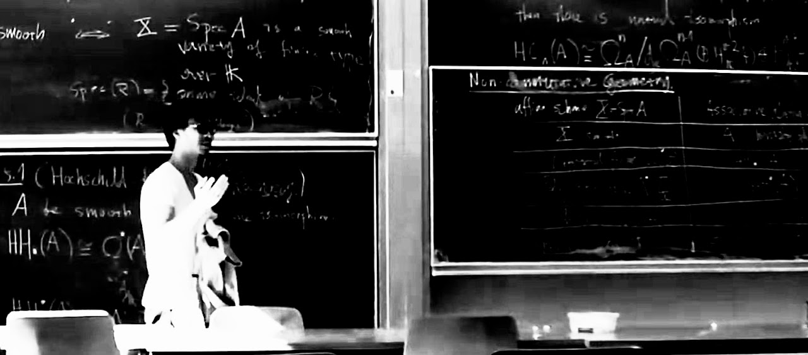

Zhen Gao
I am a mathematician with a background in physics. I obtained my master's degree in mathematics at LMU München in spring 2021, and then I have been pursuing doctoral studies at Universität Augsburg under the supervision of Prof. Dr. Urs Frauenfelder since fall 2021.
